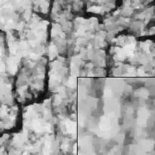
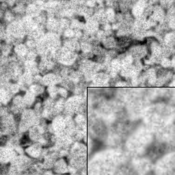
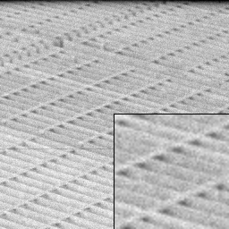
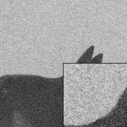

<table border=1><tr><td><b>Original<td><b>Noisy<td><b>Proposed method [1]<td><b>TV [2]<td><b>NLM [3]<td><b>Curvelet [4]<td><b>BM3D [5]<td><b>IPP [6]<td><b>EPLL [7]
<tr><td>Mean running time:<td><td>14.464s<td>2.923s<td>31.976s<td>1.270s<td>1.522s<td>427.919s<td>54.523s<tr>
<td><br>&nbsp;
<td><br>19.50dB PSNR, 0.811 SSIM
<td><br>21.47dB PSNR, 0.871 SSIM
<td><br>19.63dB PSNR, 0.780 SSIM
<td><br>22.94dB PSNR, 0.890 SSIM
<td><br>20.39dB PSNR, 0.818 SSIM
<td><br>22.53dB PSNR, 0.886 SSIM
<td><br>20.83dB PSNR, 0.856 SSIM
<td><br>22.80dB PSNR, 0.902 SSIM
<tr>
<td><br>&nbsp;
<td><br>17.18dB PSNR, 0.818 SSIM
<td><br>21.70dB PSNR, 0.934 SSIM
<td><br>19.07dB PSNR, 0.837 SSIM
<td><br>24.60dB PSNR, 0.956 SSIM
<td><br>19.00dB PSNR, 0.869 SSIM
<td><br>23.28dB PSNR, 0.949 SSIM
<td><br>21.39dB PSNR, 0.924 SSIM
<td><br>23.12dB PSNR, 0.948 SSIM
<tr>
<td><br>&nbsp;
<td><br>18.39dB PSNR, 0.586 SSIM
<td><br>25.48dB PSNR, 0.763 SSIM
<td><br>23.49dB PSNR, 0.679 SSIM
<td><br>24.07dB PSNR, 0.735 SSIM
<td><br>24.71dB PSNR, 0.733 SSIM
<td><br>26.47dB PSNR, 0.755 SSIM
<td><br>25.74dB PSNR, 0.766 SSIM
<td><br>26.55dB PSNR, 0.772 SSIM
<tr>
<td><br>&nbsp;
<td><br>17.24dB PSNR, 0.589 SSIM
<td><br>23.43dB PSNR, 0.739 SSIM
<td><br>22.09dB PSNR, 0.629 SSIM
<td><br>24.21dB PSNR, 0.672 SSIM
<td><br>22.35dB PSNR, 0.670 SSIM
<td><br>24.40dB PSNR, 0.689 SSIM
<td><br>23.66dB PSNR, 0.733 SSIM
<td><br>25.00dB PSNR, 0.750 SSIM
<tr>
<td><br>&nbsp;
<td><br>16.92dB PSNR, 0.501 SSIM
<td><br>25.93dB PSNR, 0.699 SSIM
<td><br>25.31dB PSNR, 0.644 SSIM
<td><br>24.85dB PSNR, 0.667 SSIM
<td><br>25.97dB PSNR, 0.681 SSIM
<td><br>27.31dB PSNR, 0.704 SSIM
<td><br>25.86dB PSNR, 0.716 SSIM
<td><br>27.32dB PSNR, 0.720 SSIM
<tr>
<td><br>&nbsp;
<td><br>21.55dB PSNR, 0.441 SSIM
<td><br>21.46dB PSNR, 0.527 SSIM
<td><br>20.81dB PSNR, 0.394 SSIM
<td><br>17.05dB PSNR, 0.355 SSIM
<td><br>22.85dB PSNR, 0.570 SSIM
<td><br>20.01dB PSNR, 0.608 SSIM
<td><br>23.21dB PSNR, 0.643 SSIM
<td><br>26.95dB PSNR, 0.556 SSIM
<tr>
<td><br>&nbsp;
<td><br>17.94dB PSNR, 0.577 SSIM
<td><br>24.04dB PSNR, 0.717 SSIM
<td><br>24.18dB PSNR, 0.726 SSIM
<td><br>25.61dB PSNR, 0.763 SSIM
<td><br>22.04dB PSNR, 0.715 SSIM
<td><br>25.33dB PSNR, 0.769 SSIM
<td><br>25.12dB PSNR, 0.775 SSIM
<td><br>25.88dB PSNR, 0.796 SSIM
<tr>
<td><br>&nbsp;
<td><br>17.16dB PSNR, 0.251 SSIM
<td><br>26.93dB PSNR, 0.500 SSIM
<td><br>24.87dB PSNR, 0.513 SSIM
<td><br>30.76dB PSNR, 0.529 SSIM
<td><br>26.47dB PSNR, 0.531 SSIM
<td><br>30.74dB PSNR, 0.590 SSIM
<td><br>28.40dB PSNR, 0.587 SSIM
<td><br>30.70dB PSNR, 0.597 SSIM
<tr>
<td><br>&nbsp;
<td><br>16.68dB PSNR, 0.138 SSIM
<td><br>21.24dB PSNR, 0.319 SSIM
<td><br>18.60dB PSNR, 0.377 SSIM
<td><br>15.07dB PSNR, 0.385 SSIM
<td><br>21.11dB PSNR, 0.318 SSIM
<td><br>17.30dB PSNR, 0.387 SSIM
<td><br>16.55dB PSNR, 0.388 SSIM
<td><br>22.90dB PSNR, 0.408 SSIM
<tr>
<td><br>&nbsp;
<td><br>19.00dB PSNR, 0.476 SSIM
<td><br>25.52dB PSNR, 0.613 SSIM
<td><br>25.34dB PSNR, 0.549 SSIM
<td><br>25.04dB PSNR, 0.564 SSIM
<td><br>24.76dB PSNR, 0.561 SSIM
<td><br>26.13dB PSNR, 0.593 SSIM
<td><br>25.29dB PSNR, 0.604 SSIM
<td><br>26.82dB PSNR, 0.622 SSIM
<tr>
<td><br>&nbsp;
<td><br>19.87dB PSNR, 0.724 SSIM
<td><br>22.71dB PSNR, 0.815 SSIM
<td><br>22.49dB PSNR, 0.750 SSIM
<td><br>23.96dB PSNR, 0.792 SSIM
<td><br>22.20dB PSNR, 0.769 SSIM
<td><br>23.41dB PSNR, 0.807 SSIM
<td><br>23.14dB PSNR, 0.811 SSIM
<td><br>23.92dB PSNR, 0.840 SSIM
<tr>
<td><br>&nbsp;
<td><br>19.85dB PSNR, 0.416 SSIM
<td><br>23.15dB PSNR, 0.651 SSIM
<td><br>23.97dB PSNR, 0.547 SSIM
<td><br>25.41dB PSNR, 0.578 SSIM
<td><br>23.24dB PSNR, 0.623 SSIM
<td><br>27.38dB PSNR, 0.634 SSIM
<td><br>22.75dB PSNR, 0.664 SSIM
<td><br>27.75dB PSNR, 0.674 SSIM
<tr>
<td><br>&nbsp;
<td><br>17.78dB PSNR, 0.458 SSIM
<td><br>25.68dB PSNR, 0.670 SSIM
<td><br>23.25dB PSNR, 0.641 SSIM
<td><br>22.30dB PSNR, 0.686 SSIM
<td><br>25.69dB PSNR, 0.657 SSIM
<td><br>28.49dB PSNR, 0.768 SSIM
<td><br>28.73dB PSNR, 0.770 SSIM
<td><br>28.73dB PSNR, 0.754 SSIM
<tr>
<td><br>&nbsp;
<td><br>15.55dB PSNR, 0.527 SSIM
<td><br>24.81dB PSNR, 0.746 SSIM
<td><br>22.65dB PSNR, 0.705 SSIM
<td><br>26.35dB PSNR, 0.795 SSIM
<td><br>20.96dB PSNR, 0.726 SSIM
<td><br>26.92dB PSNR, 0.815 SSIM
<td><br>22.23dB PSNR, 0.800 SSIM
<td><br>26.89dB PSNR, 0.818 SSIM
<tr>
</table>